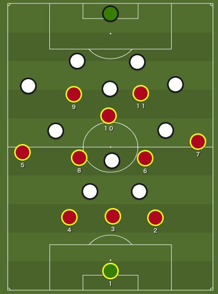

| 5-3-2システムにおけるディフェンス フットボールパラダイム | |
| フットボールパラダイム | |
| Football Paradigm (2018) | |
ワールドカップは、新しいトレンドが生まれる場所でもある。５−３−２システムと聞いてどの国を思い出すだろうか。それを思い出すためには少し時間を遡らなければならないかもしれない。当時、このシステムはサッカー界において希少なものであった。それでも「すべてはすでに一度発明されている」とトップの監督からは比喩された。ワールドカップで「５バック」というトレンドを作り出した国がある。それはオランダである。オランダ代表は２０１４年のブラジルワールドカップで、このシステム（厳密に言うと４バックと５バック）を琢磨に操り、優勝候補であったスペイン代表を予選で倒し、３位まで昇り詰めた。
かつて５−３−２システムは頻繁に使われていたのだろうか。答えはイエスである。チームと監督にこのシステムが選ばれたとはいえ、常に５−３−２というオーガニゼーションはどんな状況下でも保たれていたのであろうか？その答えはノーである。５−３−２でプレーするチームは失点のリスクを減らすために守備的な形を保ちつつ、攻撃になるとその形を変えている場合が多い。つまり、試合を通じて「少し変える」というフレキシブルさが要求されるのだ。
今回は机上の上で考えられる５−３−２システムにおける守備の可能性について考察したい。この議論をするにあたって、不可欠なことは相手がどのようにプレーしてくるかということである。全てとはいかないが、システムの噛み合わせにおいて、ある程度の場合、オートマチックな対応が可能である。ただ、ライプツィヒやホッフェンハイムのように可変システムを使いこなすチームに対しては特別なトレーニングと対応が必要であろう。
目次
5-3- 2 システムにおけるディフェンス
序章
４−４−２ダイヤモンドにおける守備
４−４−２ダイヤモンドへのフルプレッシング
５−３−２に対する守備
４−３−３に対する守備
お礼
序章
ライン間や選手個人に特別なタスクを与える前に、チームとしてどのようにボールを奪いにいくか、ゴールを守るかについて決定をしなければならない。大まかに分けて３つのオプションが考えられる。
1 . 自陣に下がって守備をする
３ラインを作りながら自陣にまず下がり、そこから守備を開始する。ウイングバックの５と７がディフェンスラインよりも高い位置でミッドフィルダーの３人と同じラインに並ぶことでミッドフィルダーの３人の距離が短くなり、フィールドの軸を守ることができる。サイドの守備はウイングバックの５と７が基本的には対応することになる。
２. 相手を誘い込んでボールを奪う
ディフェンスラインは少しだけ高い位置を保ち、９と１１は下の図のような位置取りをする。机上の上では相手のビルドアップにおいて相手のサイドバックは簡単にボールを受けることができる。図のように相手の右サイドバックにボールが入った瞬間（もしくは入りそうな瞬間に）８番がプレッシャーをかけ、ボールを奪いに行く。

3 . フルプレッシング
9 と１１をはじめとした各選手が各ポジションで１対１の状況を作り、相手に自由にプレーさせない。５と７はオプション１、２に比べて高い位置を取り、さらに走り距離を増やす。
４−４−２ダイヤモンドにおける守備
今度は相手が４−４−２のダイヤモンドでプレーして来た場合について考えてみたい。

システムの噛み合わせ上、最終ラインは３対２の状況になる。
図の上では３人のディフェンスが並んでいるが、基本的には２と４がそれぞれ相手のフォワードをマークし、３がカバーリングをするというのが一般的である。守備的ミッドフィルダーの６は相手の１０のポジションからプレーをする。５と７は相手のサイドハーフ（７、８）を対面に置きながら、自陣からサイドバックのようにプレーをする。
フィールドの軸では３対２の数的優位な状況が生まれていることを忘れてはいけない。より具体的に言えば、２対１（８、１０対６）の状況である。
相手のビルドアップ時に相手の６が守備ラインまで下がった場合 、8 がそのままついて行き、相手に数的有利な状況、つまりビルドアップを簡単にさせないという方法がある。

また相手の９、１１かつ１０へのパスコースを消すことも重要なタスクの一つである。
４−４−２ダイヤモンドへのフルプレッシング
相手 の G K が相手のセンターバックにパスをした瞬間、全員で相手にプレッシャーをかける。
３は少し上がり気味で１０をマークする。相手の４にボールが出た瞬間に、８は少し内側に絞る。９は相手４から３へのパスコースを消せる位置に立ち、１１は相手の４でボールを奪うか、５にパスを出させる。パスが出ることを予想して７は相手の５へプレッシャーをかけ、そこでボールを奪う。
５−３−２に対する守備
両チームが同じフォーメーションでプレーする場合、フィールドではお互いに同じような状況が起こりえる。ディフェンスラインは相手の２トップに対して３対２で数的有利、ミッドフィルダーは３対３で数的同数、フォワードは２対３の数的不利な状況である。キーポイントはお互いの５、７の役割とポジションである。高い位置に立ち、前線からプレッシャーをかけるのか、それとも後ろに下がり、３バックの横のスペースを埋めながら、カバーもできるポジションに立つのかということである。場合によってはより内側でプレーする場合も考えられる。
４−３−３に対する守備
相手のフォーメーションは４−３−３。ディフェンスの５人で相手のフォワード３人を守ることになる。相手のキーパーやセンターバックがボールを持った場合、それぞれが上の図のようなポジションを取れば良いであろう。問題は相手のサイドバックがボールを持った時である。
相手の４が相手の５にパスを出した瞬間に７は相手の５にプレッシャーをかけ、２は相手の１１をマーク、３はカバーに入り、４は相手の９をマークして、５は内側に絞る。ボールが反対サイドに行けば、全く同じ動きをすれば良い。
お礼
この度は本書のお買い上げありがとうございます。本書のお買い上げ特典として 、 Faceboo k グループ（フットボールパラダイム）へ招待させて頂きます。このグループでは、本書の内容に関して質問を受け付けると同時に、サッカーに関しまして議論させて頂き、お互いにサッカーとは何かについて学んでいければと思います。基本的 に Faceboo k グループへの参加者は本書をご購入された方のみとなっております。このグループへの参加希望の方は、ご質問に答えて頂くという形でグループへ招待・承認させて頂きます。
質問：キーワードは何ですか？
答え ： 1-4-3-3
Faceboo k ページ：フットボールパラダイム
fb.me/footballparadigm
Facebook グループ：チーム：フットボールパラダイム
https://www.facebook.com/groups/204298106820584/
議論の輪を広げるために本書のシュアもしく は Amazo n へのレビューを書いて頂ければ幸いです。ご協力の程、よろしくお願い致します。この度は、本当にご購入ありがとうございました。引き続き、よろしくお願い致します。
フットボールバラダイム